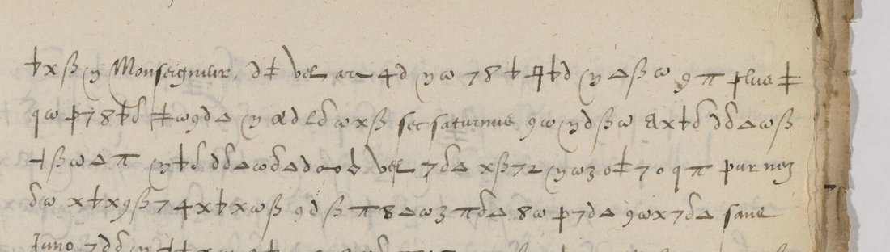
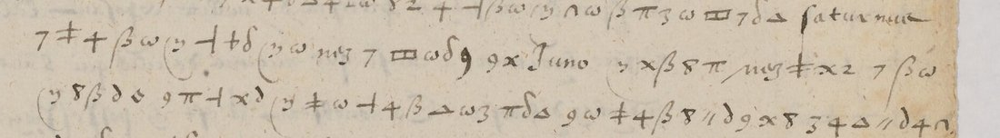

At a glanceKnown key applied, partial · contributed · 4,385 cipher tokens on seven pages
- The letters
- Guillaume Ancel, French resident at the Imperial court in Vienna, to a “Monseigneur” in France: 22 October, 2 November, 14 and 21 December 1577. Clear letters with long passages in cipher.
- Where
- Bibliothèque nationale de France, Cinq Cents de Colbert 398, pp. 524–526, 539, 561–563 and 565 (Gallica views 558–599). Most other cipher pages in the volume carry a decipherment in the margin; these do not. No DECODE record.
- The cipher
- A symbol alphabet with two to four signs per letter, signs for double letters, a few word signs, and code words written in plain letters (saturnus, Juno, my) mixed with plain-letter nulls.
- How it was deciphered
- Harumi-Matsuba transcribed the signs with Claude and checked them with OpenAI Codex, then applied Satoshi Tomokiyo’s reconstructed key. Here the files were re-measured with this project’s language models and three lines were compared with the images.
- What it says
- Archduke Matthias slipped away to the Low Countries; Ancel thinks the Emperor will deny any part in it, but notes he plays both sides with Spain while Don John’s envoy Varambon waits for leave to levy troops.
- Credit
- Reading, transcription and checks: Harumi-Matsuba (issue #53, 20 October 2026), done with AI only (Claude and Codex). Key: Satoshi Tomokiyo. No human has checked the transcription.
- Still open
- A human check of the transcription; most code words; 29 of 125 lines the contributor marks as conjectural.
01 The letters
Cinq Cents de Colbert 398 gathers original letters on German affairs addressed to Charles IX, Henri III, Catherine de Médicis and their ministers, among them the despatches of the two French residents at the Imperial court, Jean de Vulcob (1575–76) and Guillaume Ancel (1576–78, 1584). Most of their cipher passages were deciphered on arrival in the left margin. Four letters of late 1577 were not:
- 22 October 1577 (heading on p. 523; cipher from the end of p. 524 to p. 526): the flight of Archduke Matthias, the Emperor’s brother, to the Low Countries.
- 2 November 1577 (p. 539): six lines.
- 14 December 1577 (pp. 561–563): the Marquis of Varambon, Don John of Austria’s envoy, and the Spanish ambassador Borgia.
- 21 December 1577 (p. 565).
The letters open “Monseigneur” rather than “Sire”, so the addressee is not the King himself; who it is has not been settled. The single cipher line at the top of p. 570 turned out to be deciphered in the last margin line of p. 569, and the key gives the same words.

02 The key
Satoshi Tomokiyo reconstructed the cipher of Vulcob and Ancel (1575–1584) from the margin decipherments of this volume and published the table on Cryptiana (“French Ciphers for German (and Eastern) Affairs”, 15 March 2026), noting that it would allow the letters without a contemporary decipherment to be deciphered; he published no readings. The table has two to four homophones per letter (4, 7 and α for a; ω and π for e; ∂ and μ for i), single signs for doubled letters (ss, tt, pp, rr, mm, nn), and word signs such as plus = que, ros = pour, ucl = est. He also notes that Vulcob’s letter of 2 August 1572 (BnF fr. 18989) uses it. George Lasry’s 1573 letter of Charles IX to Vulcob (vulcob1573) is in a related cipher: he compared it with a key in this volume and found 14 shared letter forms.
The contributor added a few values from context and from the margin of p. 33: an m-shaped sign = uu, a flat L-like sign = g, the crossed q = ff, a lone c = null. Names and titles hide in plain-letter code words. Those checked against margin decipherments elsewhere in the volume: saturnus = l’Empereur (p. 258), Juno = le Roy d’Espagne (p. 440), my = qu’il and my3θ = qu’ilz (pp. 258, 321).
03 The reading
The contributor’s line-by-line key output and word division are in READING.en.md; code words are in brackets. Two passages:
22 October 1577, p. 525 ll. 9–13: “…tellement que a peine pouvoit il faire un pas hors de sa chambre sans le congé d’iceluy seigneur [saturnus] son frere; tant s’en faut qu’a une telle heure il eust peu sortir du chasteau, qui ferme toute la nuit…” — Matthias could hardly step out of his room without his brother the Emperor’s leave, still less leave a castle shut all night; so, Ancel argues, the Emperor will deny any part in the escape.
14 December 1577, pp. 561–562: the Emperor must declare himself for the King of Spain [Juno] or for the Archduke; if for the first, he will show it by giving Don John leave to levy troops in Germany, as Varambon has asked; meanwhile Borgia says that if the Emperor backs his brother he must do it in earnest, “d’autant que le roy catholique fera toutes les provisions possibles pour maintenir son droit”.
On 2 November the Emperor “fait toute la demonstration [qu’il] luy est possible pour persuader les Espagnolz que tel depart est advenu a son desceu”; on 21 December Varambon is back from Archduke Charles’s court with nothing, and the Emperor waits for the King of Spain’s answer.

04 How it was checked
By the contributor (all with AI): a first transcription in sign names by Claude Sonnet 5.5 and Opus 5.5 from enlarged tiles; a cross-check transcription by OpenAI Codex from the line images, without the key; two rounds of image adjudication by Claude Sonnet; then three independent Codex transcriptions, which agree with the final one on 95.2–96.1% of values (lowest page 88.8%, p. 565). With 1,000 shuffled keys, none scores as well as the real key on any page. As a calibration, two pages that do have a margin decipherment (pp. 258 and 285) were run through the same procedure without the margin being seen: 85.9% of letters agree with the margin.
Here (21 October 2026): the files were copied into the repository and re-measured (measure.py). Of 4,385 cipher tokens on the seven pages, 98.4% get a value from the key or a checked code word. Under the project’s 16th-century French model the key output scores −1.8 to −2.3 per character, against −6.3 to −6.6 for shuffled keys. Split into words of a 16th-century vocabulary, 95.4% of tokens fall inside words, against 50% for shuffled keys; this is a lenient measure, an upper bound on what reads. Recomputing the calibration from the contributor’s files gives 472 of 556 letters, 84.9%. Three lines were compared sign by sign with the BnF images (p. 525 ll. 9–10, p. 565 l. 5): all 126 signs agree in order and count; two ∂/δ (i/n) choices could not be told apart at 2,400 pixels and rest on context, as the contributor says of that pair.
The figures support the reading as French and the key as right. They do not make it a checked reading: the transcription is AI-made throughout, the adjudications are AI judgements, and the contributor marks 29 of 125 lines as conjecture or unclear syntax. The extent therefore stays partial.
05 What remains open
- A human check of the transcription against the images, starting with the 29 conjectural lines.
- Code words without a meaning: manua/manue (a person), mare, grinter, totum (probably l’Empire), nez, bel, mim; probable nulls fec, sec, sanc, sane, pome, estre, roc, vib.
- Look-alike sign pairs settled by context: 3/ʒ (m/r), p/φ (f/m), ∂/δ (i/n), 9/q (d/l), the cross/4 (o/a).
- Unclear stretches: p. 526 ll. 9–14, p. 539 ll. 2–3, p. 561 ll. 1–4 and 18–19, p. 562 ll. 25–26 (line ends lost in the gutter), p. 565 ll. 9 and 15–16.
- The addressee (“Monseigneur”) and the signatures were not checked.
06 Sources
- BnF, Cinq Cents de Colbert 398, Gallica btv1b525218133: p. 523 view 557, p. 525 view 559, p. 539 view 573, pp. 561–563 views 595–597, p. 565 view 599.
- Harumi-Matsuba, vulcob1575-public (CC BY 4.0 data, MIT code), and issue #53, 20 October 2026.
- S. Tomokiyo, “French Ciphers for German (and Eastern) Affairs”, Cryptiana, 15 March 2026: the key.
- Prior work found by the contributor: G. Labouchère, “Guillaume Ancel, envoyé résident en Allemagne”, Revue d’histoire diplomatique 37 (1923), the clear text only; D. Fontvieille on Vulcob’s cipher correspondence (Heidelberg, April 2024), working from the margin decipherments.
The contributor’s transcription, key, reading and calibration files, the re-measure and the notes are in targets/ancel1577/.